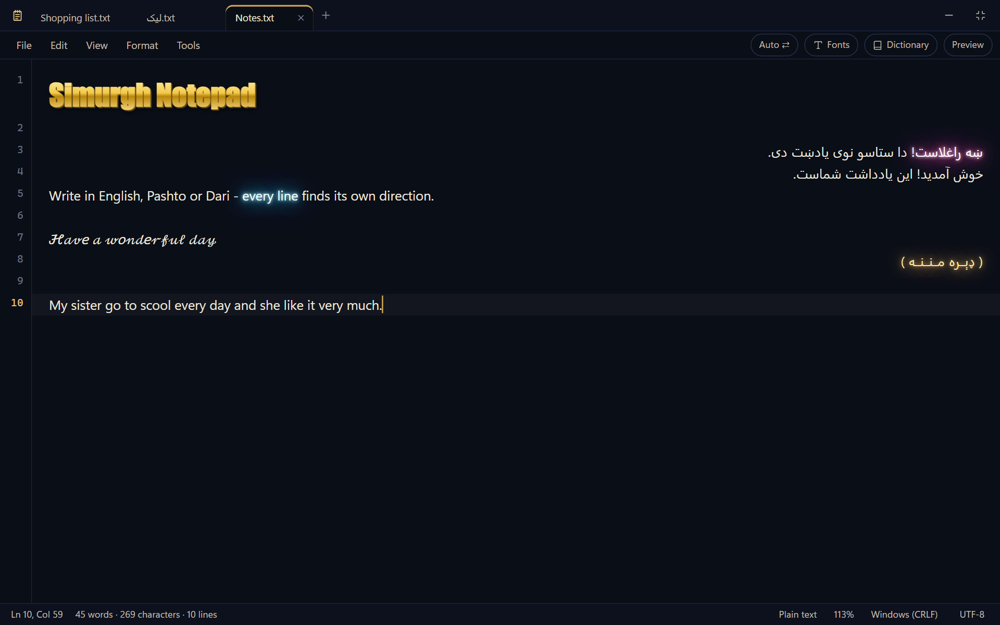
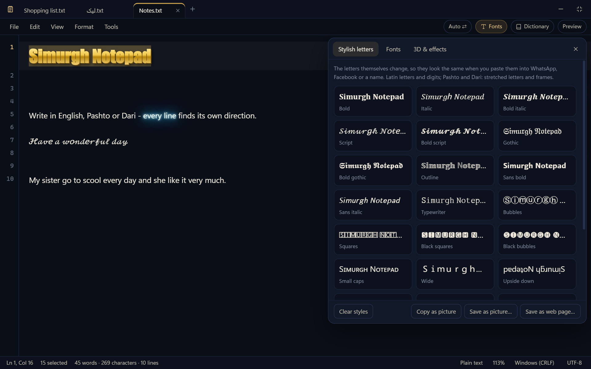
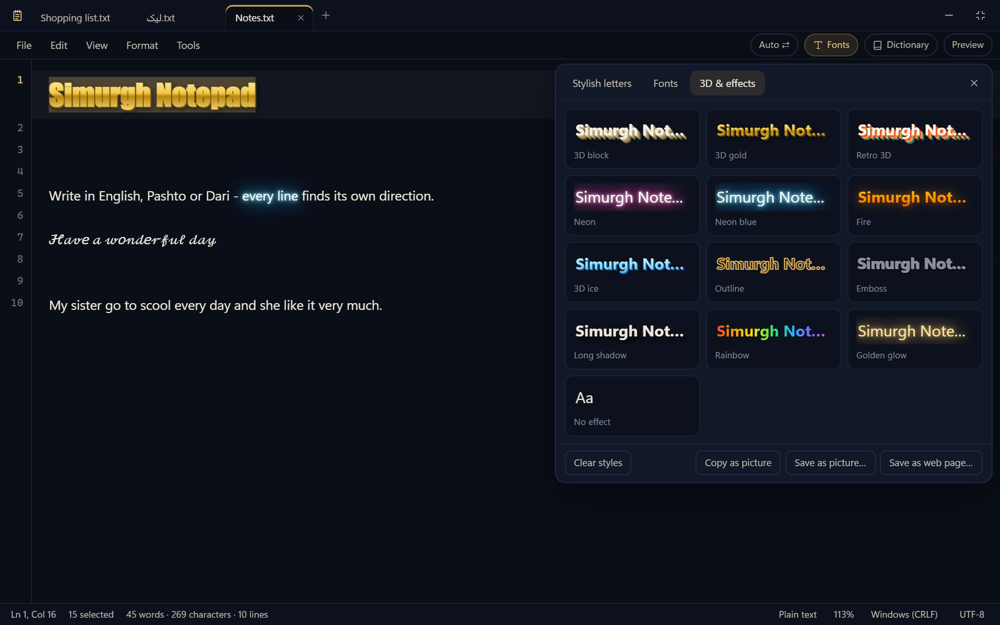
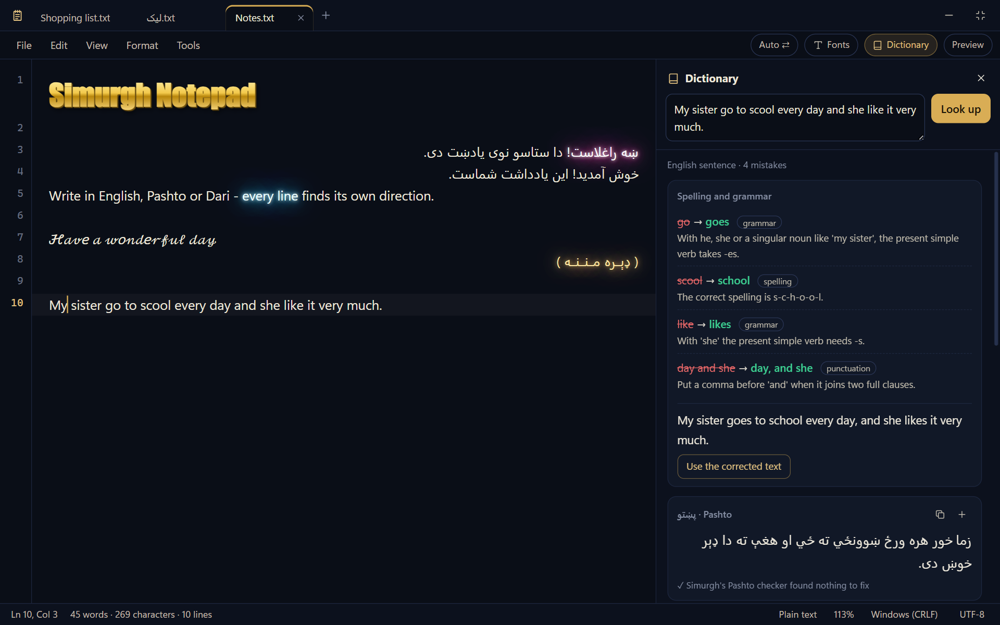
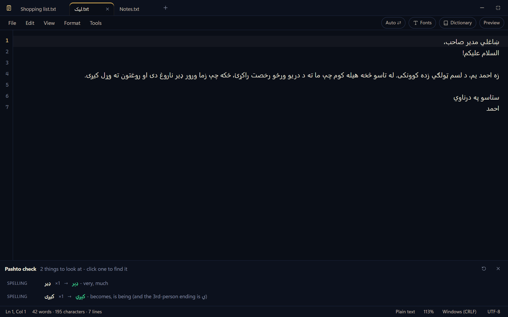

Download Simurgh
For Windows 10 and 11 (64-bit).
Free · Simurgh-Setup.exe · it updates itself after that
If Windows says “Windows protected your PC”, click More info, then Run anyway.
On Linux or a Chromebook
Kali, Debian, Ubuntu, Mint and a Chromebook’s Linux: the .deb. Fedora and openSUSE: the .rpm. Any other Linux: the AppImage.
.deb (64-bit) .rpm (64-bit) AppImage (64-bit)
ARM (many Chromebooks): .deb .rpm AppImage
If the AppImage doesn't open, your system has no FUSE: run it from a terminal with --appimage-extract-and-run.
Chromebook: turn on Linux in Settings → About ChromeOS → Developers, open the .deb in the Files app and choose Install with Linux. Simurgh then works with Linux apps and the folders you share with Linux; Chrome and Android apps stay out of its reach.

Simurgh Notepad
When Simurgh starts, it opens on its Notepad — full screen, with nothing else around it. Press Esc or Ctrl+Alt+S to get to the rest of Simurgh.
Stylish letters
Select a few words or everything, click Fonts and pick a style: bold, italic, script, gothic, bubbles, small caps and more. The letters themselves change, so they look the same when you paste them into WhatsApp, Facebook or your profile name. Pashto and Dari get stretched letters (کشیده) and frames.

Fonts and 3D text
Give the selected words any font on your PC, make them large, or add a 3D look: 3D gold, 3D block, retro, neon, fire, ice, rainbow and more. Copy it as a picture and paste it anywhere, or save it as a picture or a web page. The styles stay with your text.

Dictionary and grammar
Press F7 on a word or a sentence. It translates it into English, Pashto and Dari, finds the spelling and grammar mistakes and explains each one simply, fixes them with one click, and shows how the sentence is built. A single word gets its meanings and examples.

English, Pashto and Dari on one page
Every line finds its own direction, so Pashto and Dari read from the right and English from the left. Tools → Check Pashto or Check Dari finds the common mistakes — the five kinds of ی, Dari words in Pashto text, the half-space in Dari — and takes you to each one.

Also: tabs, find and replace, Markdown preview, the Afghan solar date (Shift+F5), sorting and joining lines, zoom, printing — and your text is kept even if you close it without saving.